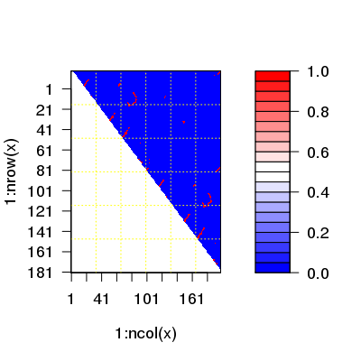

cmap(xyz, grpby = NULL, dcut = 4, scut = 3, pcut = 1, mask.lower = TRUE, ncore = 1, nseg.scale = 1)
xyz that should be considered as a group
(e.g. atoms from a particular residue). ncore>1 requires multicore package installed. fit.xyz. Construct a Contact Map for Given Protein Structure(s).
A contact map is a simplified distance matrix. See the distance matrix
function dm for further details.
Returns a N by N numeric matrix composed of zeros and ones, where one indicates a contact between selected atoms.
Grant, B.J. et al. (2006) Bioinformatics 22, 2695--2696.
##- Read PDB file pdb <- read.pdb( system.file("examples/hivp.pdb", package="bio3d") ) ## Atom Selection indices inds <- atom.select(pdb, "calpha")Build selection from input string Using selection 'string' keyword shortcut: calpha = //////CA/ segid chain resno resid eleno elety Stest "" "" "" "" "" "CA" Natom "198" "198" "198" "198" "198" "198" * Selected a total of: 198 intersecting atoms *## Reference contact map ref.cont <- cmap( pdb$xyz[inds$xyz], dcut=6, scut=3 ) plot.dmat(ref.cont)
##- Read Traj file trj <- read.dcd( system.file("examples/hivp.dcd", package="bio3d") )NATOM = 198 NFRAME= 351 ISTART= 0 last = 351 nstep = 351 nfile = 351 NSAVE = 1 NDEGF = 0 version 24 Reading (x100) | | | 0% | | | 1% | |= | 1% | |= | 2% | |== | 2% | |== | 3% | |=== | 4% | |=== | 5% | |==== | 5% | |==== | 6% | |===== | 7% | |===== | 8% | |====== | 8% | |====== | 9% | |======= | 9% | |======= | 10% | |======= | 11% | |======== | 11% | |======== | 12% | |========= | 12% | |========= | 13% | |========== | 14% | |========== | 15% | |=========== | 15% | |=========== | 16% | |============ | 17% | |============ | 18% | |============= | 18% | |============= | 19% | |============== | 19% | |============== | 20% | |============== | 21% | |=============== | 21% | |=============== | 22% | |================ | 22% | |================ | 23% | |================= | 24% | |================= | 25% | |================== | 25% | |================== | 26% | |=================== | 27% | |=================== | 28% | |==================== | 28% | |==================== | 29% | |===================== | 29% | |===================== | 30% | |===================== | 31% | |====================== | 31% | |====================== | 32% | |======================= | 32% | |======================= | 33% | |======================== | 34% | |======================== | 35% | |========================= | 35% | |========================= | 36% | |========================== | 37% | |========================== | 38% | |=========================== | 38% | |=========================== | 39% | |============================ | 39% | |============================ | 40% | |============================ | 41% | |============================= | 41% | |============================= | 42% | |============================== | 42% | |============================== | 43% | |=============================== | 44% | |=============================== | 45% | |================================ | 45% | |================================ | 46% | |================================= | 47% | |================================= | 48% | |================================== | 48% | |================================== | 49% | |=================================== | 49% | |=================================== | 50% | |=================================== | 51% | |==================================== | 51% | |==================================== | 52% | |===================================== | 52% | |===================================== | 53% | |====================================== | 54% | |====================================== | 55% | |======================================= | 55% | |======================================= | 56% | |======================================== | 57% | |======================================== | 58% | |========================================= | 58% | |========================================= | 59% | |========================================== | 59% | |========================================== | 60% | |========================================== | 61% | |=========================================== | 61% | |=========================================== | 62% | |============================================ | 62% | |============================================ | 63% | |============================================= | 64% | |============================================= | 65% | |============================================== | 65% | |============================================== | 66% | |=============================================== | 67% | |=============================================== | 68% | |================================================ | 68% | |================================================ | 69% | |================================================= | 69% | |================================================= | 70% | |================================================= | 71% | |================================================== | 71% | |================================================== | 72% | |=================================================== | 72% | |=================================================== | 73% | |==================================================== | 74% | |==================================================== | 75% | |===================================================== | 75% | |===================================================== | 76% | |====================================================== | 77% | |====================================================== | 78% | |======================================================= | 78% | |======================================================= | 79% | |======================================================== | 79% | |======================================================== | 80% | |======================================================== | 81% | |========================================================= | 81% | |========================================================= | 82% | |========================================================== | 82% | |========================================================== | 83% | |=========================================================== | 84% | |=========================================================== | 85% | |============================================================ | 85% | |============================================================ | 86% | |============================================================= | 87% | |============================================================= | 88% | |============================================================== | 88% | |============================================================== | 89% | |=============================================================== | 89% | |=============================================================== | 90% | |=============================================================== | 91% | |================================================================ | 91% | |================================================================ | 92% | |================================================================= | 92% | |================================================================= | 93% | |================================================================== | 94% | |================================================================== | 95% | |=================================================================== | 95% | |=================================================================== | 96% | |==================================================================== | 97% | |==================================================================== | 98% | |===================================================================== | 98% | |===================================================================== | 99% | |======================================================================| 99% | |======================================================================| 100%## For each frame of trajectory sum.cont <- NULL for(i in 1:nrow(trj)) { ## Contact map for frame 'i' cont <- cmap(trj[i,inds$xyz], dcut=6, scut=3) ## Product with reference prod.cont <- ref.cont * cont sum.cont <- c(sum.cont, sum(prod.cont,na.rm=TRUE)) } plot(sum.cont, typ="l")